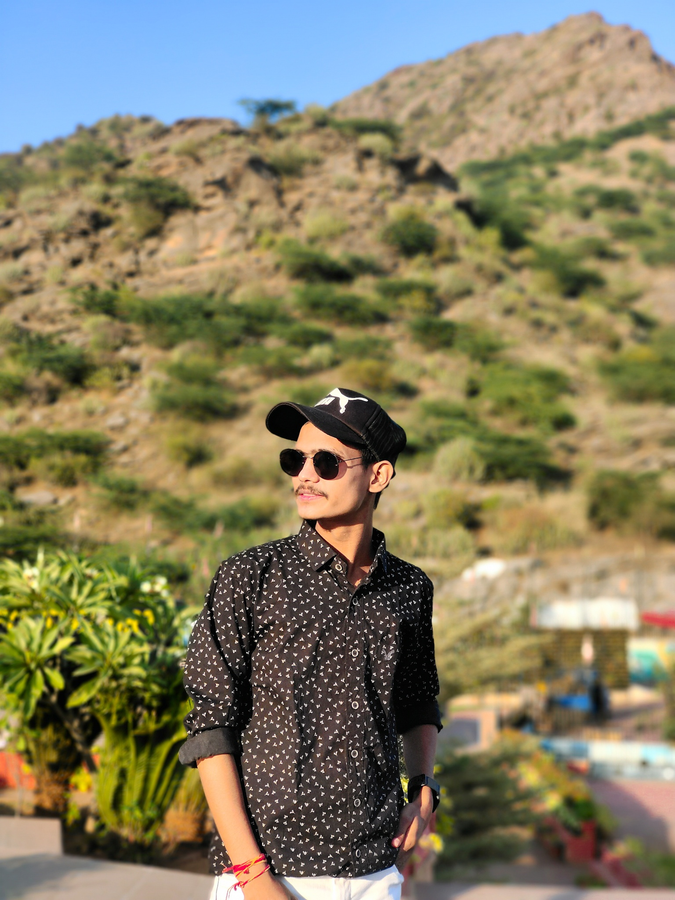

Hello.
I am a Engineeering Student Who wants to become a Web developer and Programmer in future for self-expression in being able to design and develop a website to be proud of Self satisfaction.
My Skills.

Positive-Attitude
Being Calm and Cheerful , when things go wrong Having a positive attitude means being optimistic about situations, interactions, and yourself.

Photography
I love to take photos because , “Photography is a way of feeling, of touching, of loving. What you have caught on film is captured forever… It remembers little things, long after you have forgotten everything.”
![linkedin-logo]()